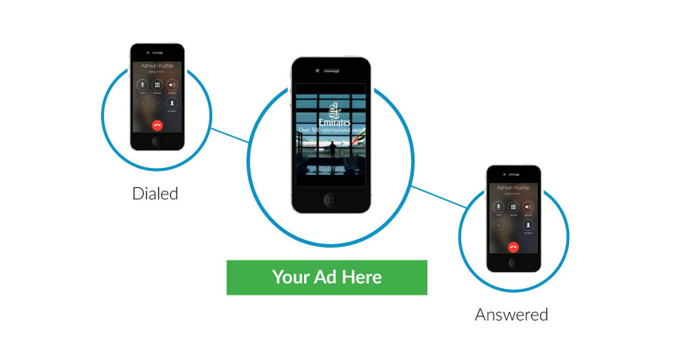
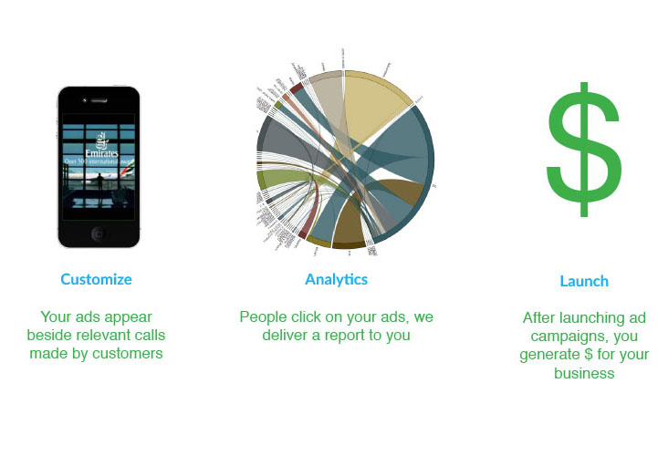
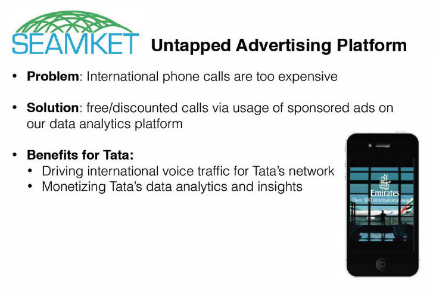

Best Application in the United States.
SEAMKet is an untapped advertising platform. It uses data analytics to enable advertisers to create and launch advertising campaigns and reach more relevant target audience. SEAMKet won the Best Application in the U.S. in the DataHack14 Hackathon sponsored by Tata Communications and NestGSV.
During a time that it takes to connect a call country to country, the caller would see an sponsored advertisement relevant to them, driving the cost of the call down, which would be subsidized by the advertiser.

Most of the first day of the hackathon, we conceptualized the idea and asked critical questions to understand the data provided by Tata Communications. We thought it was possible that calls that were more frequent and shorter in length may be used for coordination purposes and the callers would end up doing other activities offline such as sending remittances to family, running other business transactions etc. We hypothesized that other longer calls could be extensive business or family calls that were important. With further analysis of additional data, user research, and testing, we would be able to validate some of our hypothesis.

We believed that we could potentially target companies in the travel or remittances spaces who would be able to see a click-thru conversion rate on the ads before and after the call. Our revenue model would be to split the money made from the ad between the advertiser, communications company, and ourselves. What would make the cost of the international calling plan cheaper is that we allowed users to opt in to viewing ads on their phone in exchange for a cheaper international calling mobile plan.
My responsibilities included: generating the idea about the project and led a team, and designing branding and marketing plan presented for the advertising web application platform using MongoDB, Express.js, Node.js, D3 libraries, Jade, HTML, CSS, and Javascript.